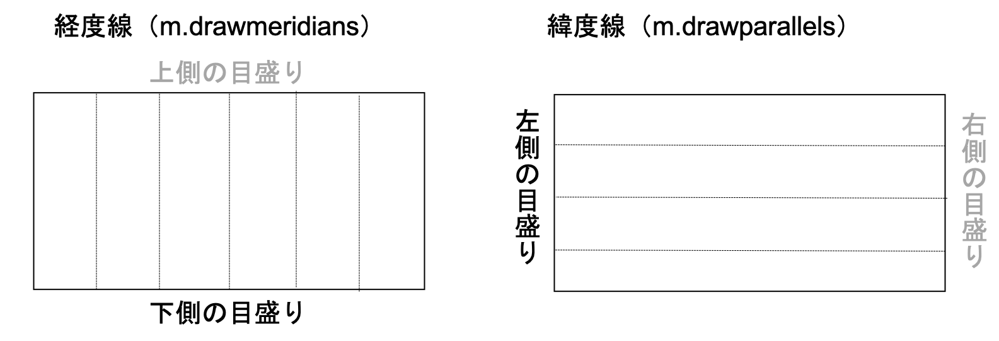
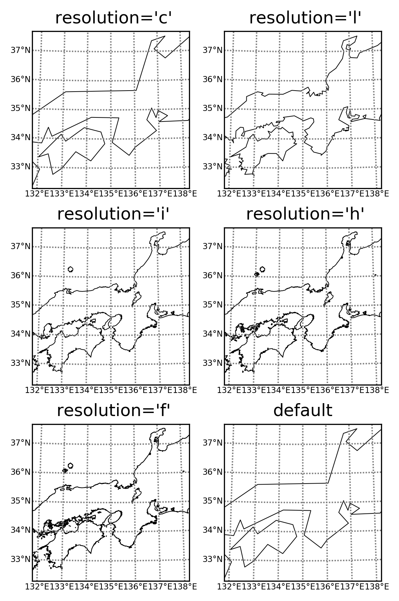

matplotlib：BasemapのTIPS
目次
[top]Basemapの基本
Basemapのモジュール
mpl_toolkits.basemapモジュールからBasemapをインポート
from mpl_toolkits.basemap import Basemap import matplotlib.pyplot as plt以降はBasemapとして参照できる。同時にmatplotlibもインポートしておく
Basemapを呼び出す
fig = plt.figure() # プロット領域の作成 m = Basemap() # マップを作成以降はm.メソッドのようなインスタンスメソッドを使った作図が可能
Basemapで経度線・緯度線を描く
m.drawmeridians(経度線を引く値のリスト) # 経度線を引く m.drawparallels(緯度線を引く値のリスト) # 緯度線を引く
- 例：60度毎に経度線を引く
m.drawmeridians(np.arange(0, 360, 60))
- 例：30度毎に緯度線を引く
m.drawparallels(np.arange(-90, 90, 30))
- 例：経度線にラベルを付ける（下側のみ）
m.drawmeridians(np.arange(0, 360, 60), labels=[False, False, False, True])
labels=[False, False, 上側ラベルの有無, 下側ラベルの有無]
前の２つの要素は反映されない - 経度線、緯度線と目盛り 
- 例：緯度線にラベルを付ける（左側のみ）
m.drawparallels(np.arange(-90,90,30), labels=[True, False, False, False])
labels=[左側のラベルの有無, 右側のラベルの有無, False, False]
後ろの２つの要素は反映されない - 例：線を灰色にしてラベルの文字サイズを小さくする
m.drawmeridians(np.arange(0, 360, 60), color="gray", fontsize='small', ¥ labels=[False, False, False, True]) # 経度線を引く m.drawparallels(np.arange(-90, 90, 30), color="gray", fontsize='small', ¥ labels=[True, False, False, False]) # 緯度線を引く
色の名前は色の名前一覧参照 - 例：線の色を名前ではなく数字で指定する
m.drawmeridians(np.arange(0, 360, 60), color="0.9") m.drawparallels(np.arange(-90, 90, 30), color="0.9")
黒の"0.0"〜白の"1.0"まで徐々に色が変わる（0.0ではなく文字列"0.0"なので注意）
Basemapで海岸線を描く
m.drawcoastlines()
Basemapで国境線を描く
m.drawcountries()
Basemapで州の境界線を描く
m.drawstates()南北アメリカ、オーストラリアのみ
Basemapで河川を描く
m.drawrivers()
- 例：河川を青色で描く
m.drawrivers(color='b')
色の名前は色の名前一覧参照 - 例：河川を太さ1.5で描く
m.drawrivers(color='b', linewidth=1.5)
Basemapで大陸と海洋を塗り分ける
図の背景を塗り潰すm.drawmapboundary()と大陸を塗り潰すm.fillcontinents()を使う
- 例：大陸を緑色で塗り潰す
m.fillcontinents(color='g')
色の名前は色の名前一覧参照 - 例：大陸を緑色、湖を青色で塗り潰す
m.fillcontinents(color='g', lake_color='b')
- 例：背景を水色、大陸を緑色で塗り潰す（海と湖が水色になる）
m.drawmapboundary(fill_color='aqua') # 背景を塗り潰す m.fillcontinents(color='g') # 大陸部分を緑色で塗り潰す
- 例：背景を水色、大陸を白抜きにする
m.drawmapboundary(fill_color='aqua') # 背景を塗り潰す m.fillcontinents(color='w') # 大陸部分を白色で塗り潰す
Basemapで地図の解像度を変更する
resolutionオプションを使う
デフォルト値：resolution='c'
m = Basemap(resolution='解像度')resolution='c'（coarse、粗い解像度）、resolution='l'（low、低解像度）、resolution = 'i'（intermediate、中間解像度）、resolution='h'（high、高解像度）、resolution='f'（full、最高解像度）
デフォルト値：resolution='c'
- 例：低解像度
m = Basemap(resolution='l')
- 解像度を変えた場合の見た目 
Basemapの地図を衛星画像風や高度分布図風に変える
図の背景を衛星画像風に変えるm.bluemarble()や高度分布図風に変えるm.etopo()を使う。m.drawmapboundary()を行うと背景が塗り潰されるので、同時には使わない。大陸のみ塗り潰したい場合には、m.fillcontinents()を行うことはできる。
- 例：bluemarbleを標準の解像度で使う
map.bluemarble()
- 例：解像度を落として作図時間を短くする
map.bluemarble(scale=0.1)
デフォルト値：0.5 - 例：etopoを標準の解像度で使う
map.etopo()
- 例：解像度を落として作図時間を短くする
map.etopo(scale=0.1)
デフォルト値：0.5
Basemapの地図
正距円筒図法
m = Basemap(projection='cyl')デフォルトの図法
gradsのlatlonに相当する図法で、緯度線・経度線が直角かつ等間隔に交差
- 東経180度を中心にする場合
m = Basemap(projection='cyl', lon_0=180)
メルカトル図法
m = Basemap(projection='merc', llcrnrlon=経度下限, urcrnrlon=経度上限, llcrnrlat=緯度下限, urcrnrlat=緯度上限)
- 例：南緯60度〜北緯60度まで、全ての緯度帯で描く場合
m = Basemap(projection='merc', llcrnrlon=0, urcrnrlon=360, llcrnrlat=-60, urcrnrlat=60)
ポーラーステレオ図法（極投影図法）
- 北極を中心に描く場合
m = Basemap(projection='npstere', lon_0=中心の緯度, boundinglat=端の緯度)
gradsのnpsに相当する図法 - 南極を中心に描く場合
m = Basemap(projection='spstere', lon_0=中心の緯度, boundinglat=端の緯度)
gradsのspsに相当する図法
ランベルト図法（ランベルト正角円錐図法）
m = Basemap(projection='lcc', lon_0=中心の経度, lat_0=中心の緯度, width=幅, height=高さ)幅と高さの単位はm
または
m = Basemap(projection='lcc', lon_0=中心の経度, lat_0=中心の緯度, llcrnrlon=経度下限, urcrnrlon=経度上限, llcrnrlat=緯度下限, urcrnrlat=緯度上限)
正射投影図法（平射図法）
m = Basemap(projection='ortho', lon_0=中心の経度, lat_0=中心の緯度)
- 例：東経180度、北緯45度を中心に描く場合
m = Basemap(projection='ortho', lon_0=180, lat_0=45)
lat_0は-90から90まで許容されているが、45より大きい値を指定すると落ちるバグがある（2019/12/12）
該当する作図を行う際には、解決法：正射投影図法で北緯45度より北側を中心にした場合の不具合（2020/02/01）のコード修正を適用する
ロビンソン図法
m = Basemap(projection='robin', lon_0=中心の経度, lat_0=中心の緯度)
- 例：東経180度を中心に描く場合
m = Basemap(projection='robin', lon_0=180)
モルワイデ図法
m = Basemap(projection='moll', lon_0=中心の経度, lat_0=中心の緯度)
- 例：東経180度を中心に描く場合
m = Basemap(projection='moll', lon_0=180)
ランベルト正積円筒図法
m = Basemap(projection='cea')
ミラー図法
m = Basemap(projection='mill', lon_0=中心の経度, lat_0=中心の緯度)
- 例：東経180度を中心に描く場合
m = Basemap(projection='mill', lon_0=180)
正距方位図法
m = Basemap(projection='aeqd', lon_0=中心の経度, lat_0=中心の緯度)
- 例：東経140度、北緯35度を中心に描く場合
m = Basemap(projection='aeqd', lon_0=140, lat_0=35)
Basemapのデータプロット
経度・緯度データの作成
- np.indicesを使い２次元配列を作成
nlonsが経度方向のデータ数、nlatsが緯度方向のデータ数で、全球の格子点データの場合。緯度方向は北極が先、南極が後の場合。delta = 360. / (nlons - 1) lats = (90. - delta * np.indices((nlats, nlons))[0, :, :]) lons = (delta * np.indices((nlats, nlons))[1, :, :]) m = Basemap(オプション) x, y = m(lons, lats)
Numpyのnp.indicesを使い、経度(lons)、緯度(lats)データを作成し、図法に対応した(x, y)データに変換する - 経度、緯度の１次元データから作成
lonが経度の１次元データ、latが緯度の１次元データの場合。
lons, lats = np.meshgrid(lon, lat) m = Basemap(オプション) x, y = m(lons, lats)
１次元目が緯度、２次元目が経度の２次元データになる。
等高線を描く
m = Basemap(オプション) x, y = m(経度データ, 緯度データ) m.contour(x, y, 等高線のデータ)
- 例：作成した経度・緯度データと２次元データ(d)で作図
m = Basemap() x, y = m(lons, lats) m.contour(x, y, d)
- 例：等高線の幅を太くする
m = Basemap() m.contour(x, y, d, linewidths=1.5)
デフォルト値：1
linewidthではなくlinewidthsなので注意 - 例：等高線を描く値を指定する
m.contour(x, y, d, levels=[0, 1, 2, 3, 4, 5])
等高線は0から5まで1毎に描く（levelsで指定） - 例：等高線にラベルを付ける
cs = m.contour(x, y, d, levels=[0, 1, 2, 3, 4, 5]) cs.clabel()
m.contourの戻り値を使い、等高線のラベルを付ける - 例：等高線を２から20まで2毎等間隔に描く
levels = np.arange(2, 20, 2) # 値のリスト作成 m.contour(x, y, d, levels=levels)
- 例：ラベルのフォーマット、文字サイズを指定する
cs = m.contour(x, y, d, levels=levels) cs.clabel(fontsize=12, fmt="%d")
文字の大きさはfontsize、ラベルの数値のフォーマットはfmtで指定する（ここでは整数値にするためfmt="%d"）。 - 例：データの最小値から最大値の範囲内で2毎等間隔に描く
levels = np.arange(np.floor(d.min()), np.ceil(d.max()), 2) # 値のリスト作成 cs = m.contour(x, y, d, levels=levels) # 等高線を描く
ZがNumpyのndarrayの場合。最小値よりも小さい最大の整数をnp.floor(Z.min())、最大値よりも大きい最小の整数をnp.ceil(Z.max())で取得、Numpyの数学関数、Numpyの統計処理参照 - 例：等高線のラベルを１つ飛ばしに付ける
cs = m.contour(x, y, d, levels=levels) clevels = cs.levels cs.clabel(clevels[::2])
cs.clabelにラベルを付ける値をclevels[::2]で与えることで、等高線のラベルを１つ飛ばしに付ける - 例：データの最小値から最大値の範囲内で1.5毎等間隔に描きラベルを付ける
levels = np.arange(np.floor(d.min()), np.ceil(d.max()), 1.5) # 値のリスト作成 cs = m.contour(x, y, d, levels=levels) # 等高線を描く clevels = cs.levels cs.clabel(clevels, fontsize=12, fmt="%.1f")
ラベルは1.5毎に付け、小数点以下第一位まで表示（fmt="%.1f"）
ZがNumpyのndarrayの場合。最小値よりも小さい最大の整数をnp.floor(Z.min())、最大値よりも大きい最小の整数をnp.ceil(Z.max())で取得、Numpyの数学関数、Numpyの統計処理参照
陰影を描く
m = Basemap(オプション) x, y = m(経度データ, 緯度データ) m.contourf(x, y, 陰影のデータ)
陰影にカラーバーを付ける
cs = m.contourf(x, y, 陰影のデータ)
cbar = m.colorbar(cs)
cbar.set_label('カラーバーのラベルに表示する文字列')
カラーバーの調整方法については、カラーバー参照（plt.colorbarと同じオプションを使用可能）
矢羽をプロットする
m = Basemap(オプション) x, y = m(経度データ, 緯度データ) m.barbs(x, y, 東西風データ, 南北風データ)
- 例：２次元データlons, lats, u, vから矢羽をプロット
m = Basemap() x, y = m(lons, lats) m.barbs(x, y, u, v)
- 例：矢羽を6おきにプロット
m.barbs(lons[::6,::6],lats[::6,::6],uwnd[::6,::6],vwnd[::6,::6])
- 例：矢羽の色を青色にする
m.barbs(x, y, u, v, color='b')
色の名前は色の名前一覧参照 - 例：矢羽の長さを4にする
m.barbs(x, y, u, v, length=4)
- 例：風速の小さな矢羽を描かない
m.barbs(x, y, u, v, sizes=dict(emptybarb=0.00))
- 例：矢羽の間を少し開けて重ならないようにする
m.barbs(x, y, u, v, sizes=dict(spacing=0.16))
文字をプロットする
Basemapのインスタンスを使い、経度、緯度を図法に対応した(x, y)に変換
m = Basemap(オプション) x, y = m(経度, 緯度) plt.text(x, y, "表示するテキスト")
- 例：フォントサイズを9に指定する場合
plt.text(x, y, "表示するテキスト", fontsize=9)
- 例：テキストの色を赤にする場合
plt.text(x, y, "表示するテキスト", color='r')
マーカーをプロットする
m = Basemap(オプション) x, y = m(経度, 緯度) m.plot(x, y, "マーカーの色と種類")
- 例：マーカーを白色の丸にする場合
m.plot(x, y, "wo")
色、マーカーをまとめて記述（それぞれ１文字のみ可能、順番はどちらでも良い）
マーカーの名前は指定可能なマーカーの一覧参照
色の名前は色の名前一覧参照 - 例：マーカーを白色の丸にする場合（色の名前とマーカーの種類は別々に記述）
m.plot(x, y, color="w", marker="o")
まとめて"wo"と記述した場合と同じになる
色の名前やマーカーの種類が長い場合にも対応 - 例：マーカーをマゼンタの三角にする場合
m.plot(x, y, "m^")
- 例：マーカーを水色の丸にする場合
m.plot(x, y, color="aqua", marker="o")
- 例：マーカーサイズを大きくする場合
m.plot(x, y, color="aqua", marker="o", markersize=12)
デフォルト値：6
マスクアウト処理
Basemap.is_landを使って陸面マスクを作成し、陸面データをNaNにする
- 陸面マスク作成
m = Basemap(オプション) # Basemap呼び出し x, y = np.meshgrid(経度データ, 緯度データ) # ２次元の経度・緯度データ作成 y_size, x_size = x.shape # 経度・緯度データの個数 x, y = m(x, y) # 図法の経度、緯度に変換する mask = list() for xpt, ypt in zip(x.flatten(), y.flatten()): mask.append(m.is_land(xpt, ypt)) mask = np.array(mask).reshape(y_size, x_size) # 2次元配列に戻す
maskは真偽値（True/False）の入った２次元配列 - 陸面データをNaNにする
df[mask] = np.nan
dfはmaskと同じサイズの2次元配列
疑似カラープロット
m = Basemap(オプション) x, y = m(経度データ, 緯度データ) m.pcolor(x, y, 東西風データ, データ)pcolorの代わりにpcolormeshを使うこともできる
図の体裁
タイトルを付ける
等高線を複数同時に描く場合に等高線上に文字を重ねない
細実線で4 hPa毎の等高線を描き、太実線で20 hPaの等高線を描き、20 hPaの等高線ラベルに気圧の値を表示した場合、細実線の上に文字が重なる。
次のように、細実線、太実線ともに気圧の値を書くことで、文字の下に等高線は描かれなくなる。
次のように、細実線、太実線ともに気圧の値を書くことで、文字の下に等高線は描かれなくなる。
clevc = np.arange(960, 1080, 4) # 細実線を描く値 cleva = np.arange(960, 1080, 20) # 太実線を描く値 cr1 = m.contour(x, y, slp, clevc, linewidths=0.8, colors='k') # 細実線 cr2 = m.contour(x, y, slp, cleva, linewidths=1.2, colors='k') # 太実線 clevels = cr1.levels # 細実線を描いた気圧の値 cr1.clabel(clevels[::5], fontsize=12, fmt="%d") # 細実線ラベルに20 hPa毎気圧の値を表示 cr2.clabel(clevels[::5], fontsize=12, fmt="%d") # 太実線ラベルに20 hPa毎気圧の値を表示
極投影図法で0度と360度を滑らかにつなげる
経度方向144（東経0度から2.5度刻み）、緯度方向73（北緯90度から2.5度刻み）の場合
[top]
import numpy as np
nlons = 144 # 経度方向のデータ数
nlats = 73 # 緯度方向のデータ数
datasize = nlons * nlats
din = np.fromfile("入力ファイル名", dtype='<f4', count=datasize) # バイナリファイルから入力
data = np.zeros((nlats, nlons+1)) # 値が0の配列を作成
data[:, 0:nlons] = din.reshape(nlats, nlons) # 0〜357.5度までコピー
data[:, nlons] = data[:, 0] # 0度のデータを360度のデータにコピー
nlons = nlons + 1 # 後の処理で使うため、経度方向のデータ数を1増やす
import matplotlib.pyplot as plt
from mpl_toolkits.basemap import Basemap
fig = plt.figure() # プロット領域の作成
m = Basemap(projection='npstere', lon_0=180, boundinglat=20) # 北極中心の極投影図法
# 緯度・経度座標の準備（単位は度）
delta = 360./(nlons-1)
lons = (delta * np.indices((nlats, nlons))[1, :, :]) # 東経0度から2.5度刻み
lats = (90. - delta * np.indices((nlats, nlons))[0, :, :]) # 北緯90度から2.5度刻み
x, y = m(lons, lats) # 図法の経度、緯度に変換する
clevs = [等高線を描く値のリスト]
m.contour(x, y, data, clevs, linewidths=0.8, colors='k') # 等高線を描く